24. Dezember 2022 - Frohe Weihnachten & Jahresrückblick!
 Isa:
Isa:
Frohe Weihnachten!
Und bald geht auch ein Jahr zu Ende...
Wir arbeiten nun seit einem Jahr an Magical Harvest und sind weiter als erwartet und nicht so weit als ursprünglich geplant war (was jedoch gut ist – dazu später mehr).
Neben der Arbeit an dem Spiel hat sich auch in unserem Leben ein wenig getan.
Persönlich
Ein kleiner Rückblick über dieses Jahr, was bei uns persönlich so alles passiert ist:
- Seit Frühjahr arbeitet Marie nur noch in ihrer Freizeit an Magical Harvest aufgrund ihres Hauptjobs (von irgendwas müssen wir nun mal leben). Und dafür hilft sie mir immens!
- wir haben von Februar bis Juni den nächsten Schwedisch-Kurs (12h pro Woche) besucht und ich noch mal von September bis November, leider kostete das aber zu viel Zeit für zu wenig Fortschritt (das Unterrichtstempo war zu langsam)
- im Sommer haben wir uns verlobt und werden im nächsten Juli heiraten
- wir hatten Deutschlandreisen geplant, um unsere Familien zu besuchen, mussten die aber wegen Corona verschieben
- Tierarzt! Dank unserem Kater sind wir häufig da gewesen, da er eine Futterallergie hat. Das hat Zeit und Nerven gekostet...
Magical Harvest
Generell haben wir viel an Magical Harvest gearbeitet (ich teilweise 70-80 Stunden pro Woche), doch vieles kam natürlich dazwischen. Dennoch sind wir zufrieden mit unserem Fortschritt.
Die Demo, auf die wir uns zwischen Juni und November fokkussiert haben, hat uns ein gutes Stück weitergebracht, allerdings auch viel Zeit gekostet. Auf Basis der gewonnen Erkenntnisse haben wir u.a. einen Stil für die Spielwelt entwickeln können, die ohne Probleme z.B. auf dem SteamDeck laufen kann, und sind noch zuversichtlicher als zuvor, dass die Richtung von Magical Harvest die Richtige ist.
Programmiermäßig habe ich alle Kernfeatures der Farm implementiert, die Tiere sind aktuell noch in Bearbeitung, werden aber noch dieses Jahr fertig (programmier-bezogen), bis auf das Minispiel, um Tiere zu kreuzen.
Außerdem ist die Logik für Übersetzungen bereits implementiert und einige andere Punkte, die dank der Demo umgesetzt wurden und sonst erst später ihren Weg ins Spiel gefunden hätten (was dann um einiges mehr Arbeit gewesen wäre).

Neue Charakter-Illustratorin: Lura
Bei einem so großen Projekt ist man nicht immer zuversichtlich, besonders mit einem so kleinen Team. Vor allem ich schwanke oftmals zwischen „das ist noch viel zu viel, was gemacht werden muss“ und „ach, bald sind ja alle Features programmiert – dann wird der Fortschritt sichtbarer sein!“.
Und dann sind da Momente wie im November, als wir von unserer neuen Charakter-Illustratorin Lura angeschrieben wurden, ob sie unsere Bachelors/ettes Zeichnen darf. Aufgrund ihrer motivierenden Motivation und ihren Fähigkeiten haben wir sie auch in unser Team aufgenommen (und vor allem wegen ihrer Skills natürlich!) und passend zu Weihnachten ist sie mit der Bachelorette „Thalana“ fertig geworden, eine Nereide (Meerfrau), welche Angst vor Wasser hat (nächste Woche mehr dazu).
Lura hat ihren Stil unseren Wünschen entsprechend etwas angepasst und dabei wirklich Talent bewiesen! Wir freuen uns sehr, sie in unserem kleinen Team begrüßen zu dürfen!
Luras Tumblr: Poke-chann-draws
Marie arbeitet zurzeit am Design der Stadt, die immerhin in 3 verschiedene Bezirke mit eigenem Baustil aufgeteilt ist. Auch dies ist motivierend, da der Welt langsam immer mehr Leben eingehaucht wird. Jeder Bezirk gehört zu einer der Fraktionen des Spiels. Den Baustil kann der Spieler später auch für sein eigenes Haus anwenden.
Finanzen
Leider haben wir nach wie vor keine finanzielle Unterstützung, aber wir werden versuchen, eine Kickstarter-Kampagne 2023 ins Leben zu rufen. Eventuell auch erst 2024. So etwas kostet eine Menge Zeit der Vorbereitung und auch Nerven und bis dahin müssen wir durchaus etwas mehr zeigen können. Indie-game-marketing ist natürlich auch ein schwieriger Punkt. Solange zu wenige von unserem Projekt wissen, macht eine solche Kampagne auch keinen Sinn und wir sind um ehrlich zu sein, nicht die begabtesten Social-Media-Nutzer. Aber wir werden versuchen, dies 2023 etwas aktiver und interessanter zu gestalten (auch die Dinge, die wir zeigen).
Wenn ihr uns jetzt schon unterstützen wollt, schaut doch mal bei Patreon vorbei: Patreon
Dadurch können wir mehr in die Entwicklung des Spiels investieren (Art, Soundtrack, [...]).
Wir bedanken uns hiermit auch ganz herzlich an die bisherigen Patrons, die uns bereits unterstützen oder unterstützt haben und das obwohl die Weltmarktpreise aktuell steigen (worunter wir natürlich auch leiden...).
Planung
Wir wollen bis Mitte 2023 definitiv „Feature-complete“ sein! Jedenfalls mit der Grundlogik des Spiels. Das bedeuted, dass „nur“ noch die Basis-Logik der NPCs programmiert werden muss, der Character-creator und die Minispiele. Natürlich ist das nicht alles, aber das sind die größeren Bereiche.
Neben dem Programmieren erstelle ich auch gleichzeitig Assets für das Spiel, weshalb ich nicht 100% meiner Zeit für Programmieren aufwende. Letztendlich versuchen wir so weit wie möglich zu kommen!

Danke für Eure Zuversicht, Unterstützung und Interesse! Wir hoffen, ihr habt eine gute Zeit und könnt die Festtage genießen!
Hoffen wir, dass die Welt 2023 ein klein wenig besser wird und alle gesund und glücklich durch das Jahr kommen!
Frohe Weihnachten und einen guten Rutsch ins neue Jahr!
Liebe Grüße,
Euer Magical Harvest-Team
Isa & Marie
Zum Abschluss ein kleines Video, das die Entwicklung von Magical Harvest über das Jahr hinweg zeigt.
1. Dezember 2022 - Tiere!
Hallo Farmer!

Tiere
In Magical Harvest gibt es mehr Farmtiere als in den herkömmlichen Farmspielen. Dies liegt an unserem „Crossbreeding“-System. Das heißt, ihr könnt Tiere teilweise miteinander kreuzen, um magische Tiere zu erhalten.
Aktuell liegt daher der Fokus auf dem Erstellen der 27(!) Farmtiere. Zuerst werden die 3D-Modelle erstellt, texturiert und danach folgen die Animationen. Dies kostet sehr viel Zeit, aber die ist es wert. Wahrscheinlich wird das auch noch fast den ganzen Monat dauern, nur die Modelle und Texturen zu machen. Die Animationen werden erst später folgen.
Die aktuellen Fortschritte und damit fertigen Tiere und Informationen zu ihnen findet ihr auf unserer Patreon-Seite (kostenlos einsehbar).
Demo
Wir hatten zuletzt die Demo vreöffentlicht und ein großes Update dazu. Auf Steam ist die Demo jetzt jedoch offline – warum? Beim Versuch last-minute-performance Verbesserungen zu machen sind einige Fehler aufgetreten. Diese zu beheben hätte mehr Zeit gekostet und wäre für den weiteren Fortschritt irrelevant gewesen.
 Dank der Demo haben wie jedoch viele Dinge bereits ins Spiel implementiert, die uns die zukünftige Entwicklung vereinfachen bzw. uns eine Menge Nacharbeit ersparen. Jetzt sind wir allerdings wieder am Einbauen von neuen Features und am anpassen der Welt auf Basis unserer Erkenntnisse.
Dank der Demo haben wie jedoch viele Dinge bereits ins Spiel implementiert, die uns die zukünftige Entwicklung vereinfachen bzw. uns eine Menge Nacharbeit ersparen. Jetzt sind wir allerdings wieder am Einbauen von neuen Features und am anpassen der Welt auf Basis unserer Erkenntnisse.
Ein Punkt ist zum Beispiel das Überarbeiten des gesamten Aussehens der Spielewelt. Es wird bedeutend stimmiger zueinander aussehen und besser für die Performance des Spiels sein (weniger/hoffentlich keine Lags auf älteren Computern oder auf dem Steam-Deck).
Die aktuellen Bilder des Environments sind nicht final, aber es wird in die Richtung gehen.

Wir wünschen euch eine schöne Weihnachtszeit! Genießt die Adventstage!
Bis zum 15. Dezember zum nächsten Update!
Gibt es Dinge, die ihr von uns wissen wollt? Schreibt uns!
Liebe Grüße,
Euer Magical Harvest-Team
Isa & Marie
15. November 2022 - Demo-Update!
Hallo Farmer!
Endlich! Das Demo-update!
 Wir haben uns entschieden, an dieser stelle einen Schlussstrich bezüglich der Überarbeitung zu ziehen! Das Erstellen und Verbessern der Demo hat uns sehr viel weiter gebracht.
Wir konnten dadurch sehen, wo die Hauptprobleme liegen (z.B. Performance) und konnten viele Dinge implementieren und verbessern, die uns für die weitere Entwicklung eine Menge
Nacharbeit ersparen werden.
Wir haben uns entschieden, an dieser stelle einen Schlussstrich bezüglich der Überarbeitung zu ziehen! Das Erstellen und Verbessern der Demo hat uns sehr viel weiter gebracht.
Wir konnten dadurch sehen, wo die Hauptprobleme liegen (z.B. Performance) und konnten viele Dinge implementieren und verbessern, die uns für die weitere Entwicklung eine Menge
Nacharbeit ersparen werden.
Ein großer Punkt, der als nächstes ansteht, ist das Erstellen einer besser aussehenden Spielwelt. In der Demo sind noch einige Platzhalter-assets in Benutzung und zudem müssen wir
ein paar Dinge für die Performance anpassen. Allen voran die Bäume. Dies bedeutet, eine völlige Überarbeitung der Umgebung und die ersten Testläufe sind sehr vielversprechend.
Leider waren wir dank Corona jetzt auch noch etwas im Fortschritt hängen geblieben, daher verzichten wir auf noch weitere Verbesserungen der Demo. Sonst kommen wir wohl nie wirklich weiter :D.
Aktuell versuchen wir auch ein wenig mehr Informationen auf unserer Patreon-Seite zu schreiben. Vieles ist und wird
mehr ein "Hinter den Kulissen" sein, die Geschichte um die Charaktere und Hyldena und auch etwas persönlicher.
Hier die Patchnotes für die Demo:
Einstellungen: - Sprachoption Deutsch hinzugefügt
- „Spiel-Einstellungen“-Menü hinzugefügt
- System Einstellungen: - Sprach-Menü hinzugefügt, um die Sprache auszuwählen (zur Zeit Englisch und Deutsch)
- Spiel Einstellungen: - Menü hinzugefügt, um die Schriften für Überschriften und Basisschriften zu ändern
- Auswahl für Textgeschwindigkeit hinzugefügt
- Auswahl für das metrische oder imperiale Messsystem hinzugefügt
- Auswahl für das Zeitformat hinzugefügt
- Möglichkeit, die Magielevel-icons an und auszuschalten hinzugefügt
- Alle UI-panels wurden visuell überarbeit
- Item-Icons: eine kleine römische Nummer unten links zeigt das Magie-level des items, zusätzlich zum farbigen Hintergrund. Es kann in den Einstellungen an- und ausgechaltet werden.
- Items haben nun 2 Sorten von Icons: eines mit Umrandung und ein „Illustrations“-Icon für größere Darstellungen
- Controller-Unterstützung hinzugefügt
- SteamDeck-Unterstützung hinzugefügt
- CloudSave für Steam hinzugefügt
- Der Sensor für die Mehrfachauswahl wurde überarbeitet
- Die Hilfestellungen am oberen, mittleren Bildschirm wurden überarbeitet
- Mehr Eingabe-möglichkeiten hinzugefügt - Items können nun mit Rechtsklick verwendet werden (oder Leertaste wie bisher) - Multi-auswahl kann mit linksklick oder E abgebrochen werden - Interaktion: linke Maustaste oder E
- Das Spiel passt nun in die meisten Auflösungs-verhältnisse (Horizontal über 4:3)
- Fehlerbehebungen
Liebe Grüße,
Euer Magical Harvest-Team
Isa & Marie
01. November 2022 - Nächster Bachelor: Zarek
Hallo Farmer!
Wir hatten eine Menge zu tun in den letzten zwei Wochen!
Das UI ist mittlerweile überarbeitet und definitiv ein Qualitätsunterschied bemerkbar. Noch immer sitzen wir am Implementieren vom
Controller-Support, was etwas nervenaufreibender ist, als zuerst angenommen. Jedes UI-Fenster muss angepasst und Button-hilfen
richtig eingefügt bzw. angezeigt werden. Aber es geht gut voran.
Zuchtsystem-Test:
Letzte Woche haben wir an einem GameJam teilgenommen, um das Zuchtsystem von Magical Harvest zu testen.
(Was ist ein GameJam? Innerhalb einer bestimmten Zeitspanne wird versucht, ein fertiges Spiel zu erstellen. Dies sind,
bei kürzeren Jams, meist kleinere Spiele von wenigen Minuten Spieldauer. Die Dauer eines Jams variiert von 24 Stunden bis
einige Tage. Es gibt auch längere, anspruchsvollere Jams)
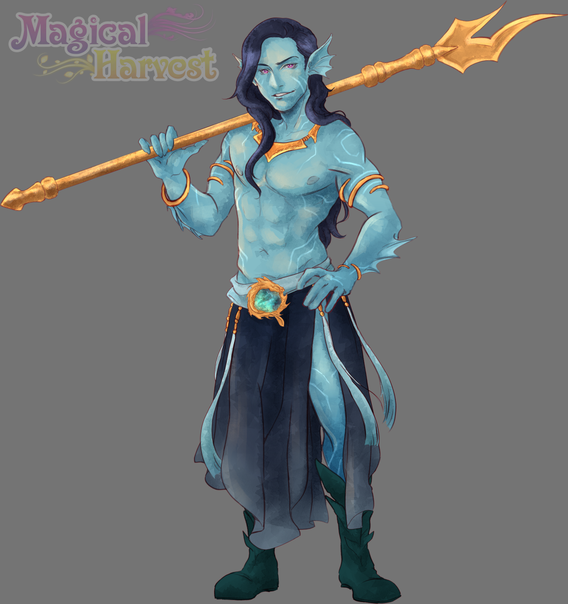
Der GameJam dauerte 5 Tage und in dieser Zeit haben wir das kleine Spiel „Monster Book of Monsters“ erstellt, in dem ihr Monster kreuzen könnt.
Das darin enthaltene Minispiel ist der Vorreiter für das Zuchtsystem zwischen unterschiedlichen Arten in Magical Harvest. Das Spiel
wurde gut angenommen und daher hat es den „User-Test“ bestanden.
Das Spiel könnt ihr (kostenlos) hier spielen: Itch io - Monster Book of Monsters
Da wir unter Zeitdruck gearbeitet haben, darf man hier nicht nach Qualität der 3D-Modelle und Animationen gehen.
Nächster Bachelor: Zarek
Desweiteren wurde die Illustration des nächsten Bachelors fertig: Zarek.
Zarek ist ein Nereide und Fischer, der jedoch lieber mit seinem Speer fischt als mit einer Angel.
Er ist sehr selbstbewusst und hat einen Traum, den er zu verwirklichen versucht. Wollt Ihr ihm dabei helfen?
Mehr Informationen zu Zarek folgen demnächst!
Künstler: Ulfenheim
Was steht nun an?
Weiterhin die Überarbeitung der Demo. Leider stehen bei uns auch Reisen ins Ausland an, weshalb uns das zeitlich noch etwas mehr zurückwirft.
Aber wir geben unser Bestes, das zumindest noch im November ein Update verfügbar ist, das die Qualität des Spiels deutlich erhöht.
Liebe Grüße,
Euer Magical Harvest-Team
Isa & Marie
15. Oktober 2022 - Die Reise geht weiter!
Hallo Farmer!
Was für aufregende Tage!
Seit ein paar Tagen könnt ihr die Demo auf Steam und
Itch io spielen.
Nun gibt es allerhand für uns zu tun! Das erste Ziel ist die Verbesserung der pre-alpha Demo vor allem im visuellen Bereich, um darauf aufbauend die Entwicklung von Magical Harvest fortzuführen.
Außerdem
- Implementieren der Lokalisation-Optionen (erst einmal Deutsch)
- Controller-unterstützung (und damit Steamdeck-unterstützung)
- Änderungen der Schrift für die Spieler möglich

Das meiste hiervon ist bereits erledigt, doch aktuell wird das gesamte UI visuell überarbeitet. Dies kostet mehr Zeit, aber dafür wird das UI um einiges besser und passender!
Wir haben bereits Rückmeldungen zur Demo erhalten und bedanken uns dafür! Jede Rückmeldung hilft uns, um zu wissen ob wir in die richtige Richtung gehen (was der Fall ist) und wo wir nacharbeiten müssen.
Dinge, die angemerkt wurden und verbessert werden müssen (neben den grafischen Aspekten):
- Die Rätsel in der Mine sind zu schwer
- Die alte Farm wurde nicht/nur schwer gefunden.
- die Steampage (wird nach der grafischen Überarbeitung angepasst)
Erster Charakter!
Die Illustration von Neria von der Rasse Drakys ist durch die talentierte Hand von Ulfenheim entstanden. Auf Basis dessen werden die Portraits mit verschiedenen Gesichtsausdrücken erstellt, die für die Dialoge verwendet werden. Wir stellen sie später noch genauer vor.
Aktuell befindet sich der Meermann Zarek in Bearbeitung (Rasse Nereide).
Und nun… zurück an die Arbeit. Das UI wartet.
Liebe Grüße,
Euer Magical Harvest-Team
Isa & Marie
1. Oktober 2022 - Noch 3 Tage!
Hallo Farmer!
Noch 3 Tage! Am 04. Oktober um 16 Uhr MEZ könnt ihr die circa 5-stündige Demo auf Steam oder
Itch io spielen!
Wir sind selbst schon sehr gespannt und aufgeregt!
In den letzten Tagen haben wir kaum noch Bugs fixen müssen. In diesem Sinne auch nicht wirklich Bugs, sondern eher Verbesserungen.
Wir sind mit dem aktuellen Stand zufrieden und bereit, die Demo zu veröffentlichen.
Wir haben die Zeit genutzt, die Demo ausgiebig zu testen. Die Hauptquest ist erfüllbar, doch es könnte dafür mehr als nur einen Spieldurchlauf brauchen.
Ihr könnt euch auch, solltet ihr kein Fan von Rätseln sein, auch im Discord zusammenschließen und euch gegenseitig helfen!
Discord
Wir haben einen neuen Discord-Server! Er bietet mehr Channels und mehr Informationen rund um Magical Harvest und ist u.a. mit unserem Patreon verknüpft.
Patreon
Unser Patreon ist nun live! Ihr könnt uns über Patreon unterstützen und einige Benefits erhalten. Dort findet ihr auch Work-In-Progress Updates oder Informationen zu Hintergründen für Designentscheidungen. Im Laufe der Zeit werden mehr und mehr Posts dort hinzukommen.
Zum Beispiel findet ihr dort auch Konzepte der Bachelors von Magical Harvest!
Donation-DLC
Wer uns unterstützen mag, aber Patreon nicht mag, kann auch auf Steam unser Donation-DLC kaufen, das nun ebenfalls live ist. Das DLC dient rein zur Spende und bietet keine zusätzlichen Inhalte oder Benefits (im Gegensatz zu Patreon).
Bachelors
Wir sind aktuell dabei, alle Bachelors zu designen. Es geht also in diesem Bereich ebenfalls voran!
Von jeder Rasse wird es zunächst einen männlichen und einen weiblichen Bachelor geben. Wir versuchen sie äußerlich und charakterlich breit zu fächern, sodass für jeden etwas dabei ist. Späterhin hoffen wir, die Zeit zu haben noch mehr einzufügen. Mindestens ein Elf oder Drakys ist noch zusätzlich geplant.
Ausblick
In den letzten News haben wir bereits viel über die längerfristige Planung geschrieben. Wenn die Demo veröffentlich wurde, haben wir erst einmal 2 Wochen Urlaub (wir sind dennoch zur Stelle, sollten Probleme mit der Demo-Version auftreten!).
Danach erfolgt die Lokalisierung auf Deutsch und zeitgleich die Überarbeitung des UIs.
Also…
Seid in 4 Tagen mit dabei, wenn die Demo veröffentlicht wird! Wir freuen uns über Feedback und auch Bugreports – das ihr in der Demo selbst auch schreiben könnt.
Liebe Grüße,
Euer Magical Harvest-Team
Isa & Marie
15. September 2022 - Noch 19 Tage!
Hallo Farmer!
Wo sind eigentlich die letzten 2 Wochen hin? Der Countdown läuft! Noch 19 Tage bis zum Release der Demo-Version (04. Oktober) auf Steam und Itch.io.
Wir hatten am 10. September Tag der offenen Tür in Spelkollektivet, wo wir leben. Dort konnten wir Magical Harvest zum ersten Mal öffentlich zeigen und waren
überwältigt von den positiven Rückmeldungen! Daher sind wir sehr zuversichtlich, dass unsere Demo genug bietet – für eine Pre-Alpha-Demo vielleicht sogar etwas zu viel?
Es war sehr interessant, Spieler dabei zu beobachten und darauf aufbauend Anpassungen durchzuführen. Wie wir zum Beispiel feststellten, war das
Demo-Tutorial noch nicht intuitiv genug, was direkt behoben wurde.
In den letzten zwei Wochen sind größtenteils Fehler behoben und Design-technische Anpassungen gemacht worden. Das Tutorial erklärt nun auch die
Tastatursteuerung (die zuvor einfach komplett gefehlt hatte) und gibt ein wenig mehr Hilfestellung für das erledigen der Tutorial-Aufgaben, die einem das Spiel erklären.
Ein paar hartnäckige Fehler haben sich bis gestern noch im Spiel gehalten, aber auch die konnten nun beiseitegeschafft werden.
Neue Features werden nicht mehr eingebaut, um weitere Fehler zu vermeiden. In der Demo werden demnach die Farmtiere fehlen, aber
es gibt genug andere Dinge zu tun, daher ist das verkraftbar. Außerdem fehlt die Controller-Steuerung. Diese wird im Zuge der UI-Überarbeitung auf den neusten Stand gebracht.
Homepage & Patreon
Neben Arbeiten am Spiel wurde auch die Homepage aktualisiert, sowie eine Patreon-Seite vorbereitet. Vielleicht wollt Ihr uns ja bereits unterstützen
und euch das Spiel und Extras über Patreon sichern?
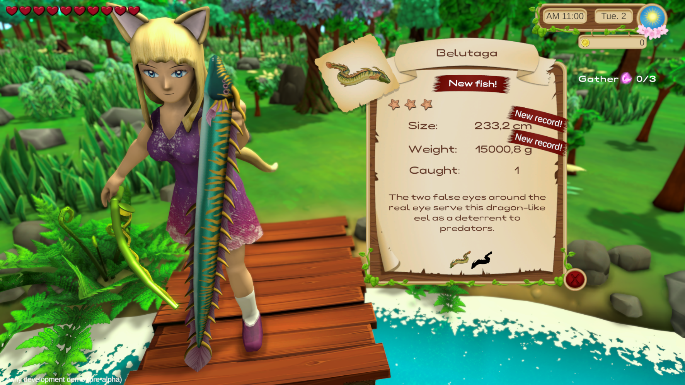
Trailer
Zudem wurde ein neuer Trailer erstellt, der sich auf das Gameplay zentriert. Der Trailer ist daher etwas länger und zeigt die Spielelemente der Demo-version.
Ausblick:
Die nächsten drei Wochen werden nur dazu verwendet, noch kleinere Anpassungen durchzuführen. Zum Beispiel das Anpassen von Soundeffekten oder noch
einfügen von der ein oder anderen Animation, um Magical Harvest noch etwas mehr Leben zu einzuhauchen.
Nach der Veröffentlichung ist erst einmal eine Pause von 2 Wochen angesagt. Sollten natürlich schwerwiegende Fehler auftreten, werden diese behoben.
Wie sieht der Plan nach der Demo aus?
Wir hoffen auf konstruktives Feedback, um auf dessen Basis Anpassungen durchzuführen und um Ideen frühestmöglich in die Entwicklung mit einfließen lassen zu können.
Nach unserer Pause werden erst einmal Hintergrundarbeiten im Vordergrund stehen.

- Ganz oben dabei die Überarbeitung des UIs. Dazu zählt auch die Übersetzung vom Englischen ins Deutsche und die Option, die Schrift in den Einstellungen auswählen zu können.
- Controller-support
- Zudem ist das Spiel aktuell nur für ein Bildschirmratio von 16:9 ausgelegt, was für Wide-screen-benutzer natürlich ungünstig ist. Auch dies wird im Zuge der UI-Überarbeitung angepasst.
Im Anschluss wird das Projekt selbst aufgeräumt. Wir haben noch sehr viele alte Platzhalter-objekte im Projektordner und werden daher erst einmal Ordnung schaffen.
Es wird demnach eine Weile keine großen, sichtbaren Fortschritte geben. Ab spätestens Dezember wird dann jedoch wieder Fokus auf die nächsten Features gelegt.
So viel zum längeren Plan.
In zwei Wochen gibt es das neue Update – bis dahin: habt eine schöne Zeit!
Liebe Grüße,
Euer Magical Harvest-Team
Isa & Marie
1. September 2022 - Die Zeit läuft!
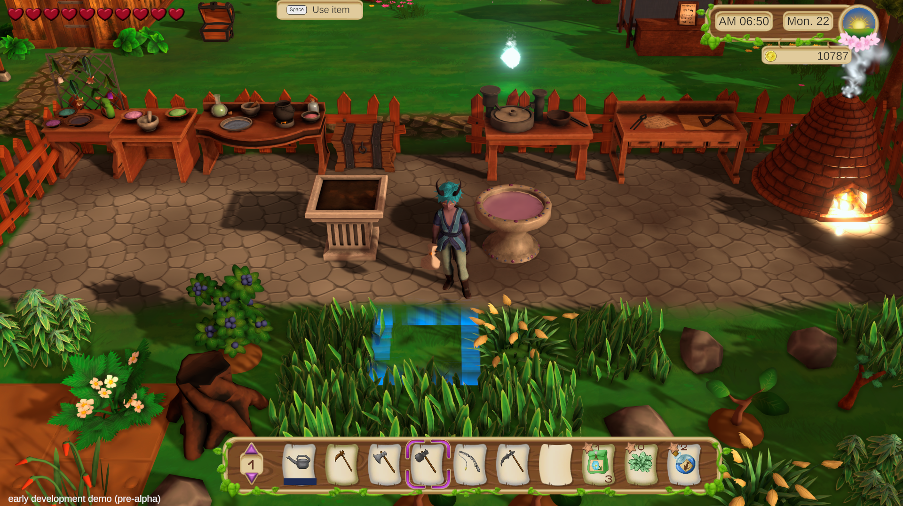
Hallo Farmer!
Nur noch 1,5 Wochen bis zum ersten öffentlichen Test der Demo. Die Steam-version folgt am 04. Oktober 2022!
Die Demo-version bietet circa 5 Stunden Spielzeit. Es kann der komplette Frühling gespielt und dabei die
ersten 3 von 5 Stufen der aktuell implementierten Frühlingspflanzen entdeckt werden.
Die Wachstumsdauer der Pflanzen ist für die Demo ist reduziert und die Entwicklungschance
sowie manche Dropchancen erhöht.
Die Demo ist aktuell in einem spielbaren Zustand. Kleinere Verbesserungen müssen noch gemacht
werden, doch diese werden die Veröffentlichung nicht aufhalten. In den letzten 15 Tagen war
viel geplant, nicht alles wurde umgesetzt, doch vieles wurde noch zusätzlich bearbeitet oder implementiert.
Geplant und umgesetzt wurde:
- Dünger überarbeitet. 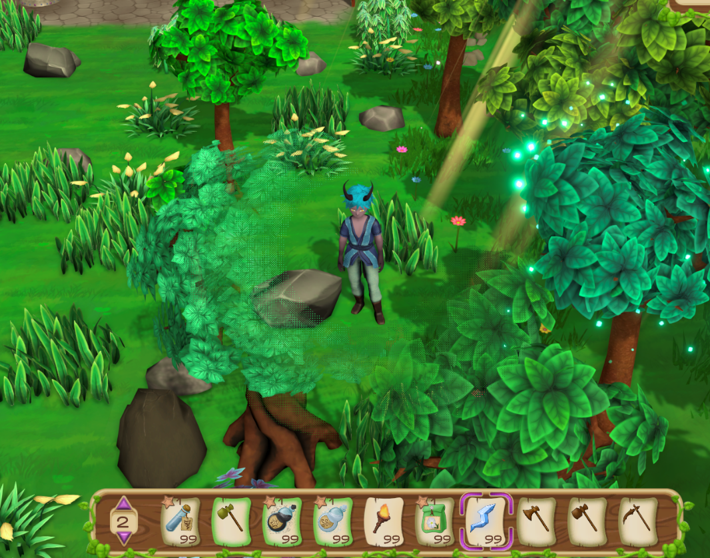
- Händler mit zur Demo passenden Waren versehen.
- Mehr Items zum Sammeln für den Waldbereich erstellt.
- Rätsel in der Mine entworfen und eingepflegt.
- Magiesplitter eingebaut.
- Beschreibungen und Namen der Items aktualisiert.
- Effekte von verbrauchbaren Items überarbeitet (z.B. Kochprodukte).
- "Hilfe"-Buch implementiert.
- Mehr Soundeffekte eingefügt.
- Magiesplitterfragmente für Alchemie eingefügt.
- Spieler sind nun hinter Bäumen sichtbar.
- Produktpreise aktualisiert.
- Übersetzungssystem (für später nützlich).
- Einstellbare Helligkeit für dunkle Orte in den Einstellungen.
- Überarbeitung des Lichts in allen Szenen.
- diverse Fehlerbehebungen.
 Die ersten Farmtiere haben noch nicht ihren Weg in die Demoversion gefunden, da sie noch sehr Fehleranfällig
sind. Je nachdem wie gut die weitere Verbesserung des Spiels in den nächsten zwei Wochen voran geht,
werden die Tiere in der Steam-version vorhanden sein oder nicht. Unser eigener Wunsch ist es jedoch,
dass sie im Spiel implementiert sind.
Die ersten Farmtiere haben noch nicht ihren Weg in die Demoversion gefunden, da sie noch sehr Fehleranfällig
sind. Je nachdem wie gut die weitere Verbesserung des Spiels in den nächsten zwei Wochen voran geht,
werden die Tiere in der Steam-version vorhanden sein oder nicht. Unser eigener Wunsch ist es jedoch,
dass sie im Spiel implementiert sind. In den nächsten 1.5 Wochen stehen demnach eine Menge (kleinere) Verbesserungen an, um die Demo für unseren Spieletest in Spelkollektivet in Schweden weiter zu verbessern.
Das einzige Element, das noch fehlt, ist eine Art Abbruchbedingung für die Demo-version, am Ende des Frühlings.
Außerdem steht an oberster Stelle noch die Erstellung eines Trailers. Wir sind sehr gespannt und freuen uns sehr auf nächste Woche! Wir sind zudem voller Zuversicht, dass das Spiel Spaß machen und den Spielern soweit gefallen wird (uns macht es jedenfalls Spaß!).
Liebe Grüße,
Euer Magical Harvest-Team
Isa & Marie
15. August 2022 - Intro & Tutorial

Hallo Farmer!
Noch 3,5 Wochen bis die Demo zum ersten Mal öffentlich gespielt werden kann (Steam folgt Anfang Oktober).
Die Zeit läuft also, noch immer ist viel zu tun, aber es wird.
Die Zeitplanung für die letzten 15 Tage hat genau gepasst. Alles geplante konnte umgesetzt werden und wird für die spätere
Entwicklung des Spiels ebenfalls von Nutzen sein.
Was fertig gestellt wurde:
- Questsystem
- Dialogsystem (muss für die spätere Spielversion noch etwas erweitert werden)
- Eine Kombination aus Quest- und Dialogsystem
- Tutorial (für die Demo)
- Intro (für die Demo)
 Das Tutorial und das Intro können übersprungen werden. Dies ist allerdings beim ersten Mal spielen nicht zu empfehlen.
Das Tutorial und das Intro können übersprungen werden. Dies ist allerdings beim ersten Mal spielen nicht zu empfehlen. Das Quest- und Dialogsystem wird in der Demoversion für das Tutorial verwendet, um die Spieler an die Spielprinzipien heranzuführen. Ein Tutorial zu erstellen ist sehr viel Aufwand (viel mehr als erwartet), daher beläuft sich dies für die Demo auf ein Mindestmaß, das jedoch ausreichend ist.
Es müssen bei einem Tutorial vielerlei Dinge beachtet werden, damit die Spieler die Spieldaten nicht durcheinanderbringen oder bereits Dinge tun können, die nicht vorgesehen sind. Daher kommen auch viele Einschränkungen während Tutorials in manchen Spielen.
Auch das Intro ist gerade nur als eine kleine Einführung gedacht. Das spätere Spiel wird ein anderes Intro bekommen.
Planung bis 1. September:
Alle Spielkomponenten, die in der Demo sein werden, sind nun im Spiel enthalten. Nun stehen wir vor der Aufgabe, alles weiter zusammenzufügen und zu überarbeiten. Zum Beispiel müssen die Stalltiere und (Demo-)Händler noch effektiv eingebunden werden.
In den nächsten Wochen werden wir demnach in vielen Bereichen des Spiels Verbesserungen und Verknüpfungen einfügen. Außerdem wird noch an einem neuen Trailer gearbeitet. Seit dem letzten Trailer hat sich das Spiel einfach zu sehr verändert.
Im Detail:
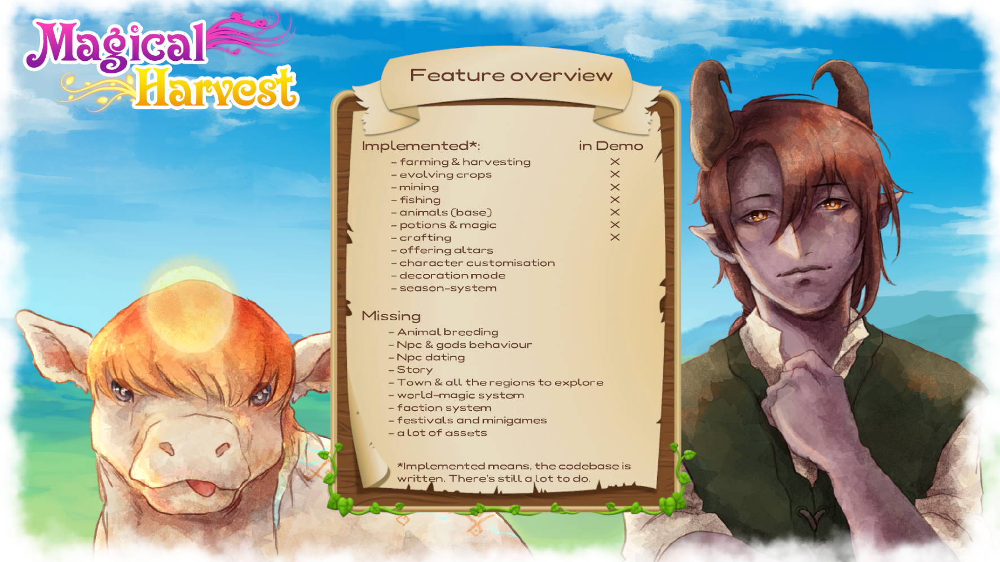
- Farmtiere einbinden (noch kein Zucht-system)
- Dünger überarbeiten
- Händler mit zur Demo passenden Waren versehen
- Mehr Items zum Sammeln für den Waldbereich erstellen (Blumen)
- Rätsel in der Mine
- Magiesplitter einbauen
- Beschreibungen und Namen der ganzen Items aktualisieren
- Fische fertig erstellen
- Effekte von verbrauchbaren Items überarbeiten (z.B. Kochprodukte)
- "Hilfe"-Buch
- Trailer
- evtl. Überarbeitung des Interaktions-systems
- (wenn Zeit) mehr Soundeffekte (keine Priorität in den nächsten 2 Wochen)
Was sind eure Erwartungen an die Demo-version?
(Erinnerung: die Demo ist eine Pre-Alpha-Version, die noch nicht alle Spielelemente beinhaltet)
Liebe Grüße,
Euer Magical Harvest-Team
Isa & Marie
01. August 2022 - Wald und Blumen! Eine Menge Blumen!
 Hallo Farmer!
Hallo Farmer!
Wieder sind 15 Tage vergangen und wieder ist eine Menge in Magical Harvest dazu gekommen! Das Spiel hat nun alle Weltbereiche, die in der Demo-Version zu entdecken sind (dies ist allerdings auch nur ein kleiner Teil im Vergleich zum späteren Spiel – außerdem sind die Maps für die
Demoversion angepasst und werden so in der Form später nicht ganz wie sie jetzt sind im Spiel sein.
Was getan wurde:
- Speichersystem: Das Spiel kann nun in (vorläufig) 3 verfügbaren Speicherslots gespeichert und geladen werden. Gespeichert wird, wenn man einen Tag beendet.
- Das Fischen-minispiel wurde etwas geändert
- Der Waldabschnitt wurde erstellt, der die Farm von der Mine trennt und Zugang zum Meer bietet
- Alle 6 Blumenarten können nun in 9 verschiedene Farben an einem Färbetisch gefärbt werden. Das ergibt 54 verschiedenfarbige Blumen auf der Farm!
- Erste sammelbare Items für den Wald wurden eingefügt und ein Zufallssystem kreiert, das diese zufällig jeden Tag spawnen bzw. wachsen lässt.
- Dekorationsobjekte für den Wald wurden erstellt (Farn, Waldanemonen, Blumen, Mineneingang).
- Visuelle Verbesserungen: Glitzereffekt von einsammelbaren Objekten, Magie-Icons
Planung bis 15. August:
Da alle für die Demo wichtigen Spielbereiche nun implementiert sind, steht nur noch das Tutorial als Hauptaugenmerk im Vordergrund.
Dies beinhaltet das Implementieren von:
- Dialogsystem
- Questsystem
- Tutorialquests in Kombination mit Dialogen
- Einführungsgeschichte für die Demo
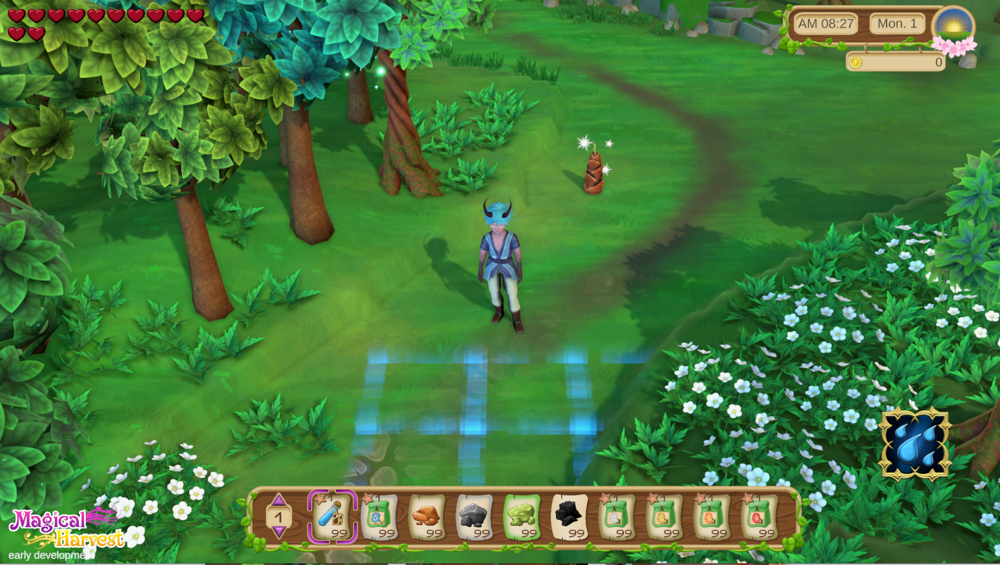 Eigentlich war Angekündigt, dass wir die Demo im Rahmen des Steam-Next-Festivals im Oktober veröffentlichen. Dies wird nicht der Fall sein – die Demo bekommt ihr dennoch im Oktober! Was uns vorher nur nicht bekannt war, ist der Umstand, dass man nur einmal am Steam-Next-Fest teilnehmen kann und das sollte zeitnah zur Veröffentlichung sein. Dies wird in unserem Fall jedoch noch dauern, daher macht es keinen Sinn, jetzt schon teilzunehmen.
An dieser Stelle möchten wir auch noch mal betonen, dass die Demo eine Art Vor-Alpha-Status hat. Sie soll nur einen Vorgeschmack auf das Farmleben geben. Die ganzen NPCs fehlen immerhin und somit der gesamte Dating-part! Außerdem wird die Charaktererstellung und der Dekorationsmodus nicht inbegriffen sein, da dafür schlichtweg noch keine Assets vorhanden sind (und er auch noch nicht ausgereift ist).
Dennoch wird euch etwas geboten werden und eure Lust auf mehr wecken!
Wenn ihr uns unterstützen wollt, schaut doch mal auf Facebook, Twitter oder/und Instagram vorbei und folgt uns dort. Dort erhaltet ihr auch mehr Zwischeninformationen und Bildmaterial.
Liebe Grüße,
Euer Magical Harvest-Team
Isa & Marie
15. Juli 2022 - Weitere Inhalte!
 Hallo Freunde!
Hallo Freunde!
Nach der Fertigstellung des großen Parts „Mine“ lagen nun kleinere Verbesserungen in verschiedenen Bereichen im Spiel im Fokus.
In den letzten zwei Wochen gingen die Arbeiten an folgenden Inhalten gut voran:
- Blumen: es gibt nun 6 Frühlingsblumen im Spiel, die gepflanzt werden können. Später wird es von den Blumen auch Farbvariationen geben.
- Pulver: aus den Blumen kann farbiges Pulver hergestellt werden, das als Zutat für Alchemie und Schneiderei verwendet werden kann.
- Ein Basis-NPC-Shop zum Kaufen von Items (für die Demo).
- Preise für die Samen und Farmprodukte wurden festgelegt bzw. berechnet. Dabei wird auch die Qualität mit einbezogen.
- Die Qualität von Herstellbaren Produkten wird nun auf Basis der verwendeten Zutaten berechnet (falls das Produkt ein Qualitäts-produkt ist).
- Farmbäume T1-T3 sind nun fertig und können gefällt werden. Dabei wurde das Baumfällen ebenfalls visuell überarbeitet.
- Auf der Farm wachsen nun Bäume und Gras, und Steine erscheinen über die Zeit hinweg.
- Einstellungen: ein Menü für die ersten Basiseinstellungen wurde erstellt. Für:
-- > Lautstärke
-- > Auflösung (aktull noch auf 16:9-Verhältnis begrenzt)
-- > Graphik-qualität
- Die Konzepte für die 20 Fische, welche man in der Demo-Version angeln kann, sind fertig.
- Illustration: unser Künstler für die Charaktere hat die erste Illustration für Magical Harvest fertig gestellt.
Der Stil für die Charaktere wird auch der Portrait-Stil im Spiel selbst sein.
Künstler: Ulfenheim


Was geplant war, jedoch nicht fertig wurde, sind die Preise der Handwerksprodukte. Das wird demnächst zwischen drin noch angepasst.
Planung bis zum 01. August:
 Wir liegen mit unserer Planung für die Demo-version sehr gut in der Zeit – sind sogar schneller, als erwartet.
Wir liegen mit unserer Planung für die Demo-version sehr gut in der Zeit – sind sogar schneller, als erwartet.Folgende Inhalte sind bis August in Planung:
- Speicher-System, um den Spielstand zu speichern.
- Überarbeitung des Angel-Systems.
- Erstellung des Waldabschnitts, der zwischen der Farm und der Mine liegt.
- Falls Zeit: Anpassung der Farmtiere, damit sie zumindest in einem frühen Stadium auf der Farm verwendbar sind, um Produkte zu erhalten. Die Modelle werden allerdings nach wie vor Platzhalter-modelle sein.
Außerdem geht demnächst der erste Auftrag für das Charakterporträt unseres ersten NPCs in Auftrag. Dafür müssen noch Konzeptskizzen angefertigt werden.
Liebe Grüße,
Euer Magical Harvest-Team
Isa & Marie
1. Juli 2022 - Mine
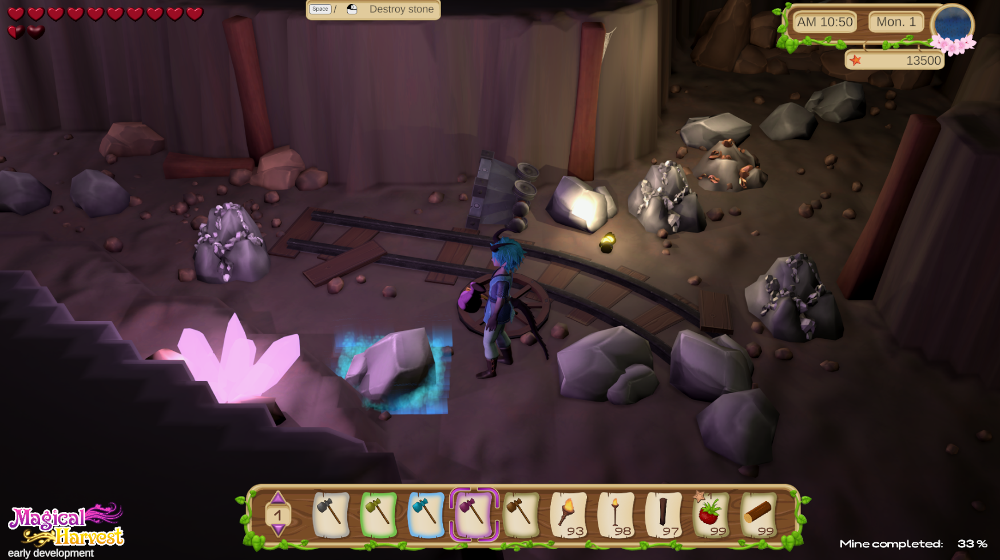
Hallo, ihr magischen Farmfreude!
Die Entwicklung für die Demo-Version geht voran und in den letzten zwei Wochen hat sich einiges getan!
Wir haben ein paar weitere Konzepte für Wasserkreaturen zum Angeln z.B. Qualle, Aal oder Auster. In der Demo sollen mind.
20 verschiedene Wassertiere geangelt werden können zusätzlich zu ihren Farbvarianten. Angelorte sind die Farm, das Meer und die Mine.
Kochen wurde fertig und auch einige Rezepte eingepflegt, allerdings stehen noch Preis- und Qualitätsberechnung der Produkte aus.
Außerdem haben die Produkte noch keine Effekte beim Essen.
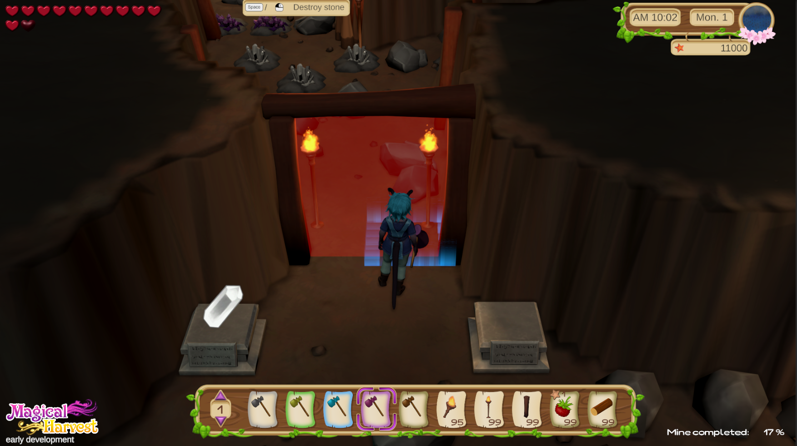
Der große Bereich Mine ist für die Demo-version zu 98% fertig gestellt. Es fehlen noch ein paar Rätsel, die werden erst am Ende angepasst,
wenn die Demo spielbar ist. In der Mine können 3 Steinarten,3 Erze und 3 Kristalle abgebaut, sowie 3 Pilzarten gefunden werden. Die Mine kann
Stück für Stück erforscht und erweitert werden, um neue Bereiche freizuschalten.
Jeden Montag werden die sammelbaren Objekte in der Mine resettet. Dazwischen erholt sich die Mine jedoch auch täglich ein wenig,
um für Nachschub an Abbau-produkten zu sorgen. Dies kann sich im Verlauf der Entwicklung noch ändern.
Das Implementieren von Licht in der Mine war ein großer Schwerpunkt, der einiges an Zeit gekostet hat… In den Einstellungen wird es auf
jeden Fall auch einen Regler geben, um die Helligkeit manuell einzustellen (für manche könnte die Mine aktuell etwas dunkel wirken).
 Neben der Mine stehen nun auch das Schmelzen von Metallen zu Barren sowie das Schleifen von Rohedelsteinen zu Juwelen zur Verfügung.
Neben der Mine stehen nun auch das Schmelzen von Metallen zu Barren sowie das Schleifen von Rohedelsteinen zu Juwelen zur Verfügung.
Neue 3D-Objekte wurden eingefügt bzw. überarbeitet:
Kristalle T1-T3, Küche (noch ohne Dekoration), Erzschmelze, Edelsteinschleifer, Alchemistisch, Werkbank, Bett, Bücherregal, Nachttisch.
Unser Platzhalter-Charakter hat nun dem Grafik-stil entsprechend angepasste Kleidung.
Neben diesen Hauptbereichen wurden auch noch generelle Verbesserungen im Hintergrund für einen besseren Spielfluss vorgenommen.
Planung bis zum 15.Juli:
 Folgende Punkte sollen bis zum 15. Juli bearbeitet werden:
Folgende Punkte sollen bis zum 15. Juli bearbeitet werden:
- Alchemie (Rezepte für Demo einpflegen, letzte Icons malen)
- Berechnung der Preise und Qualität für die Handwerksprodukte (Alchemie, Handwerk, Kochen etc.)
- Ein Shop zum Kaufen von Basis-Gegenstände
- Überarbeitung vom Fällen von Bäumen
- 3D-Modelle für versch. Objekte
Dies sind teilweise eher kleinere Vorhaben, weshalb womöglich noch Zeit ist, weitere Dinge zu implementieren.
Weiterhin steht aus:
- Angeln: Überarbeitung (kleinere Anpassungen)
- Einstellungen
- Speichern
- Tutorial
- Soundeffekte

Wir wünschen euch derweil einen schönen Sommer!
Genießt das Wetter und lasst es euch gut gehen!
Liebe Grüße,
Euer Magical Harvest-Team
Isa & Marie
15. Juni 2022 - DEMO-VERSION!
 Hallo, magische Farmfreunde!
Hallo, magische Farmfreunde!
In den letzten zwei Wochen sind Entscheidungen gefällt worden, die Euch vielleicht freuen. Ursprünglich wollten wir den
Fokus auf das Implementieren aller Kerninhalte in diesem Jahr legen, aber nun, da der Spielzyklus um die Farm fertig ist,
legen wir den Fokus auf das Erstellen einer Demo-version!
Das Züchten der Tiere wird dabei noch fehlen, ansonsten sind alle Inhalte rund um das Farmleben geplant, inklusive dem Abbauen
von Erzen und Kristallen aus der Mine und Angeln von ersten Fischen und ihren Farbvarianten.
Handwerklich könnt ihr das normale Handwerk ausüben, kochen und Tränke brauen. Der Dekorationsmodus wird eventuell gänzlich
rausgenommen werden oder nur beschränkt verfügbar sein, da die aktuellen, dekorativen Objekte nur Platzhalter sind und wir den
Fokus der Assets auf den Kern-Gameplayloop legen.
 Geplant ist, die Demo im September fertig gestellt zu haben. Dann wird unser erster Spieletest bei einer öffentlichen
Spiele-Veranstaltung in Schweden stattfinden und zum Steam-Next-Fest im Oktober wird sie dann auf Steam online zur Verfügung
stehen.
Geplant ist, die Demo im September fertig gestellt zu haben. Dann wird unser erster Spieletest bei einer öffentlichen
Spiele-Veranstaltung in Schweden stattfinden und zum Steam-Next-Fest im Oktober wird sie dann auf Steam online zur Verfügung
stehen.
Der Zeitrahmen ist recht eng, aber wir sind zuversichtlich, Euch erste Einblicke mit dieser Demoversion im Oktober gewähren zu können!
Die Demoversion kann als eine Art Pre-Alpha-Version angesehen werde und natürlich wird sich zur fertigen Version dann noch einiges ändern.
Was wurde in den letzten zwei Wochen gemacht?
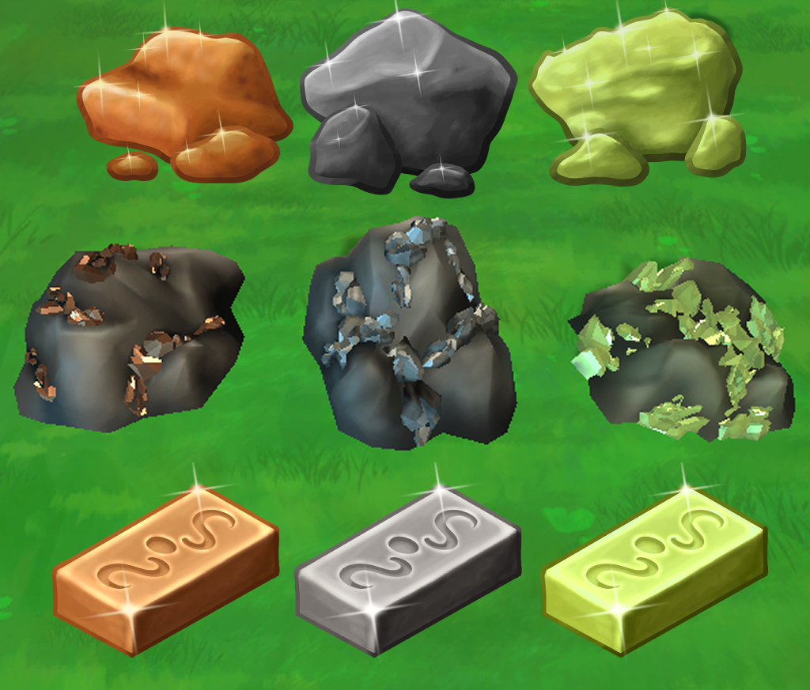
- Steampage überarbeitet (WIP - aktuell arbeitet unser Char-artist an den Steam-capsules).
- Konzeptplanung für die Demoversion.
- Altarfunktion fertiggestellt.
- Tiere können mittels einer Glocke am Stall aus dem Stall und in den Stall geschickt werden
- Schneiderei überarbeitet
- Kochen: erste Rezepte inklusive Icons eingefügt, 3D-model der Kochstelle begonnen
- Erze T1-T3 eingefügt (3D-Model und Icon)
 Planung bis zum 1.Juli:
Planung bis zum 1.Juli: Für die Demoversion sollen folgende Bereiche fertig implementiert werden:
- Kochen
- Mine & Schmelzen von Erzen
Daher... weiter geht's!
Liebe Grüße,
Euer Magical Harvest-Team
Isa & Marie
1. Juni 2022 - Tiere und Schreine
 Isa:
Isa:
Hallo, magische Farmfreunde!
So produktiv die Wochen davor waren, waren die letzten zwei nicht allzu produktiv. Die Tiere sind etwas aufwendiger zu implementieren als erwartet und meine
Motivation war auch nicht ganz so hoch wie davor. Aber nun gut, man kann nicht immer hoch motiviert sein. Dafür bin ich etwas entspannter – hat also etwas Gutes.
Zu allererst: wir haben den ersten Steam-devlog / news-Eintrag! ->
Steam: Juni-News
Und dann direkt zu den neuen GameFeatures. Zuerst die Tiere:
- Es gibt 2 Typen von Ställen: für kleine Tiere und große Tiere.
- Die Stalltypen besitzen 3 Größen, je eine für 5, 10 und 15 Tiere.
- Tiere können Ställen zugeordnet werden.
- Es gibt männliche und weibliche Tiere, die je nach Geschlecht und Tierart Produkte produzieren oder fallen lassen, sofern sie ausgewachsen sind.
- Tiere werden nach x Tagen erwachsen.
- Tiere sind in Carnivore und Herbivore unterteilt und brauchen entsprechend Futter.
- Tiere brauchen eine Einheit Futter am Tag.
- Die Ställe können mit einem Silo verbunden werden, wodurch das benötigte Futter automatisch im Stall aufgefüllt wird.
- Das Silo kann beide Futtersorten beinhalten.
- Mit den Tieren kann interagiert werden, um ihre Freundespunkte zu erhöhen.
- Man kann den Tieren Leckerli geben, um ihre Freundespunkte zu erhöhen.
- Tiere werden nach zufälligen x Tagen schmutzig und wollen mit einer Bürste gesäubert werden.
- Schafe müssen mit einer Schere geschoren werden und sind zu Testzwecken unter die Fleischfresser gegangen.
- Hühner lassen Eier fallen, werden die Eier nicht eingesammelt, verschwinden sie über Nacht.

- Schreine können mit Baumaterialien 3x ausgebaut werden.
- Mit jeder Ausbaustufe kann man ein zusätzliches Produkt liefern.
- Der Schrein gibt mittels Icons vor, welche Produkte der Gott heute geliefert haben möchte. Es sind demnach (ingame) tägliche Lieferaufgaben.
- Mit jeder Opfergabe steigen die Freundschaftspunkte des entsprechenden Gottes.
Außerdem sind drei weitere 3D-Models für die Büsche T3-T5 hinzugekommen: Flüsterbeere, Sonnebeere und Mondbeere.
Marie hat eine Stufe des Stalls konzipiert sowie theoretisch die Paarung der Tiere ausgearbeitet.

Ausblick: Da ich die ersten Junitage auf Reise bin, wird der Fokus bei mir und auch bei Marie im ersten Teil des Monats auf Konzepte liegen. Charakter-konzepte sowie Design verschiedener Dinge.
Außerdem werden wir nun monatlich auf Steam den Fortschritt des Spiels als News veröffentlichen.
Die Arbeit an den neuen Capsules auf Steam geht leider nur langsam voran, aber wir werden nach und nach Verbesserungen der Steam-page in Angriff nehmen.
Aktuell haben wir etwas mehr als 400 Wishlist-Einträge. Immerhin ein Anfang, dafür, dass wir bisher kaum was zum Zeigen hatten. Langsam füllt sich jedoch das Spiel.
Ansonsten werde ich ein paar Dinge im Spiel überarbeiten bzw. erweitern. Zum Beispiel werden wir zwei verschiedene Düngerarten einbauen. Das Handwerk Schneiderei wird etwas umgeändert und auf das allgemeine Handwerkssystem angepasst.
Nach der Überarbeitung wird dann der Fokus wieder auf den Tieren liegen.
Wenn ihr mehr wissen wollt oder euch etwas anderes besonders interessiert, schaut bei unserem Discord vorbei und chattet mit uns. Wir freuen uns über Interessierte!
Bis zum nächsten Mal!
15. Mai 2022 - Viele neue kleine Features!
Isa:
Neu: Das Spiel wächst langsam, aber stetig. Die letzten zwei Wochen waren recht produktiv in Bezug auf neue Implementationen.
- Bäume und Büsche: Bäume und Büsche können auf der Farm ohne Farmboden platziert werden und brauchen nicht bewässert zu werden. Sie sind ganzjährig.
- Die Buscharten Blaubeere (T1) und Himbeere (T2) wurden implementiert (3D-Modelle), außerdem 3 weitere T-Stufen für die Büsche konzipiert.
- Es existieren nun 100 Tränke incl. deren Icons im Spiel.
- Der Farmboden kann nun gedüngt werden (mit Dünger oder Zauber).
- Samen können mit einem Evolutions-Gegenstand zu einer höheren Tier-Stufe entwickelt werden (max. T5). Dafür wird ein Samen und ein Trank einer best. Stufe benötigt. Je höher die Stufe des Tranks, desto mehr Samen erhält man unter Umständen.
- Feldfrüchte etc. können in Samen umgewandelt werden. Auch gefundene Pflanzen, die in den Wäldern zu finden sind.
- 5 verschiedene Gras-typen sind implementiert (T1-T5), incl. 3D-Modelle und Icons. Das Gras kann mit einer Sense oder dem entsprechenden Zauber geschnitten werden.
- 5 verschiedene Stein-typen sind implementiert (T1-T5), incl. vorläufiger 3D-Modelle. Um Steine zu zerstören braucht man einen Hammer oder einen entsprechenden Zauber.
- Icons für die verschiedenen Samentypen wurden entworfen (Feldfrüchte, Blumen, Kräuter, Büsche/Bäume).
- 3D-Modelle für die Kräuter T1: Minze, Silberblatt und T2: Koriander und Löwenzahn wurden implementiert.
- Tierfutter (Gras) wurde implementiert und kann angebaut und geerntet werden.
- Die Basis für einen Tier-Stall und ein Silo wurde implementiert und befindet sich in Entwicklung.
- Alle Tierarten (bis auf eine) wurden fertig konzipiert.
Was fehlt noch? Hier die großen, groben Blöcke der fehlenden Mechaniken:
- Tiere und deren Verhalten und Interaktionen (als nächstes geplant)
- Paarung von Tieren
- Wildtiere
- NPCs und deren künstliche Intelligenz (geplant ab circa mitte Juni-Juli)
- Händler
- Schreine und Götter
- Magiesystem in der Welt
- Stadt und deren Fraktionen mit dem Rufsystem
- Feste und Minispiele

Ausblick: Programmiermäßig liegt der Fokus nun auf den Tierställen, den Farmtieren und deren Versorgung. Dies wird wahrscheinlich die vollen nächsten 2 Wochen in Anspruch nehmen.
Nebenbei stehen weiter Konzepte und evtl. 3D-Modelle für verschiedene Dinge an. z.B. weitere Bäume oder weitere Feldfrüchte oder Kräuter. Danach habe ich eine Woche Urlaub, in der ich wahrscheinlich nur an der Patreon-Seite und Steam-Seite arbeiten werde.
01. Mai 2022 - Alchemie und Magie
Isa:
Neu: Und wieder sind 2 Wochen vorbei. Die letzten zwei Wochen waren von Fortschritt gesegnet! Neben Tränken mit Statuseffekten wie z.B. zeitweise schneller laufen, exp-erhöhung, sind nun auch Tränke im Spiel, mit denen man Magie wirken kann. Und es ist toll mit ihnen die Farm freizuräumen oder die Felder zu bearbeiten.
Demnach ist nun auch (endlich) Alchemie im Spiel. Das vorherige Handwerk-system wird auch noch durch das neue Prinzip ersetzt. Zusammen mit Alchemie ist auch Kochen und Schneiderei implementiert (allerdings noch ohne richtige Rezepte).
Die ersten 10 Kräuter haben ihren Weg ins Spiel gefunden – zumindest in Item form für das Inventar. 3D-modelle stehen noch aus.
Aktuell sind 6 verschiedene Zauber im Spiel (Namen und aktuelle visuelle Effekte sind Platzhalter).
- Windzauber -> zum Abernten von Feldfrüchten
- Sichelzauber -> zum Schneiden von Gras auf der Farm (wir haben jetzt auch Gras!)
- „Smash“-zauber -> zum Zerstören von Steinen auf der Farm (ja, Steine existieren jetzt auch)
- Sturmzauber -> Zerstört Bäume und Farmpflanzen bzw Farmerde
- Regenzauber -> bewässert Farmerde
- Erdzauber -> gräbt den Boden zu Farmerde um
Marie hat weitere Tier-konzepte gemacht und es verspricht, sehr interessant zu werden.
Ansonsten sind einige kleinere Verbesserungen auf Basis unseres Spieltests von Mitte April vorgenommen worden wie z. B. eine einfache Rückmeldung, wenn ein Item eingesammelt wird.
 Ausblick:
Der nächste Schritt ist das Evolutionssystem der Pflanzen und die Bodenqualität bzw. die Qualität der Farmpflanzen.
Zeitlich ist es aktuell etwas enger, da ich nebenher auch intensiver Schwedisch lerne. Daher gehe ich davon aus, dass
es auch cirka zwei Wochen dauern wird, dies richtig zu implementieren.
Ausblick:
Der nächste Schritt ist das Evolutionssystem der Pflanzen und die Bodenqualität bzw. die Qualität der Farmpflanzen.
Zeitlich ist es aktuell etwas enger, da ich nebenher auch intensiver Schwedisch lerne. Daher gehe ich davon aus, dass
es auch cirka zwei Wochen dauern wird, dies richtig zu implementieren.
Zusätzlich gönne ich mir etwas mehr Freizeit und habe meine rund 70h Woche auf cirka 55-60h arbeit pro Woche reduziert. Generell sieht der zeitliche programmiertechnische Fortschritt der Features allerdings sehr gut aus!
Im Mai wird auch die Steam-page überarbeitet! Aktuell haben wir knapp über 300 Wishlisteinträge. Zusätzlich ist eine Patreon-Seite geplant.
15. April 2022 - Crafting
 Isa:
Isa:
Neu:
Kochen und Alchemie fehlt noch, allerdings ist das Crafting fertig. Ich hatte weniger Zeit, neue Inhalte zu implementieren,
da ich das Input-System neu überarbeitet habe, da dies aufgrund eines Engine-Updates nicht mehr funktionierte.
Jetzt ist allerdings alles wieder mit dem Controller spielbar und auch einige Bugs behoben, was in der Zukunft
vorteilhaft ist.
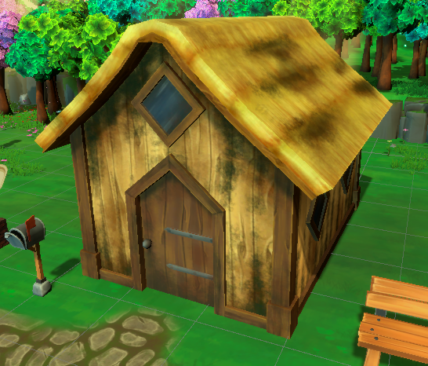
Das erste Farmhaus-Model ist fertig und auch die T4- und T5-Erdbeermodelle (wobei T5 grafisch noch bearbeitet werden wird).
Der Tag-Nacht Zyklus wurde überarbeitet und die Lichtverhältnisse verbessert.
Wir haben auch ein paar Fische mehr, unter anderem einen Seestern.

Am 16.04.2022 haben wir einen ersten Playtest mit Außenstehenden und sind sehr gespannt!
Dabei wird es vor allem um das Angeln und Farmen gehen.
Ausblick:
In der 2. Aprilhälfte steht definitiv das Kochen und Alchemie auf dem Plan. Darauf aufbauend wird die
Verarbeitung von Feldfrüchten in Samen erfolgen, was gleichzeitig die Möglichkeit bringt, die Samen eine
Tier-Stufe aufzuwerten. Für die nächste Zeit steht mehr das Implementieren von neuen Features im Vordergrund.
01. April 2022 - Early development trailer
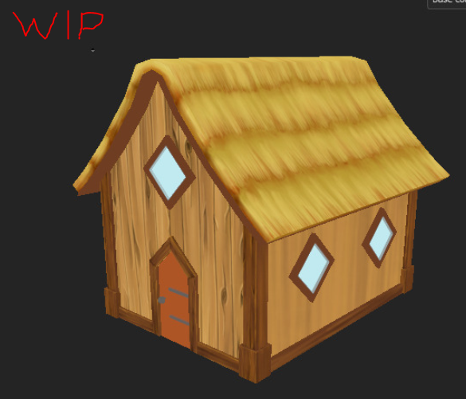
Isa:
Neu:
Ich habe mir eine Woche Pause gegönnt, in der eher Charakter-konzepte im Vordergrund standen (u.a. der Kleidungsstil der Rassen).
Außerdem habe ich mit der 3D-Erstellung und Texturierung vom ersten Farmhaus begonnen.
Die Aktion „das Spiel visuell hübscher machen“ ist abgeschlossen. Natürlich ist es noch keine Endgraphik, aber wir
nähern uns der Richtung des Stils.
Das Angeln ist nun erst einmal semi-fertig. Es gibt nun zwei Angel-modi: einmal mit Mini-game, das die Chance erhöht,
höherwertige Fische zu fangen und einmal ohne Mini-game. Außerdem können nun auch einfache Objekte geangelt werden
(der obligatorische Stiefel zum Beispiel).
Auf Basis der visuellen Anpassung haben wir einen Trailer erstellt, der den aktuellen Stand des Spiels zeigt.
Es ist das Ergebnis aus 4 Monaten Arbeit, wobei natürlich die ganzen Hintergrundarbeiten nicht sichtbar sind.
Den Trailer findet ihr auf der Startseite der Homepage ( Home).
Charakter-artist:
Wir haben jetzt einen Charakter-artist, der uns die Charaktere zeichnen wird!
Arstation: Ulfenheim
Normalerweise hat er einen etwas dunkleren Stil, doch für Magical Harvest hat er seinen Stil angepasst und
wird uns wundervolle Artworks erschaffen. Einen der Testcharaktere könnt Ihr unserem Trailer sehen.
Auf Basis seines Stils wird jetzt erst einmal die Steam-page überarbeitet und die ganzen Steam-Bilder angepasst.
Was kommt als nächstes?:
Bis Mitte April ist geplant, die ganzen Herstellungs-elemente ins Spiel zu implementieren. Damit sind das normale
Herstellen, Kochen und Alchemie gemeint. Da die neu implementierten Spielelemente direkt mit dem neuen UI-Stil gemacht
werden, dauert die Implementation nun auch etwas länger.
Außerdem möchte ich das erste Farmhaus natürlich fertig machen sowie weitere Feldfrüchte-Modelle. Ich werde
wohl wieder beim Frühling beginnen und auch direkt die T4 und T5-Modelle machen, die ich bisher weggelassen habe.
Ich will meine Mond-kartoffel haben!
Marie wird weiterhin Fische kreieren und die Story weiter designen.

15. März 2022 – Steam page und UI
Isa:
Unsere Steampage ist da!
Wishlist und folgt uns auf Steam! Das hilft uns und dem ganzen Projekt!
Magical Harvest auf Steam
Aktuelles: Am letzten Wochenende habe ich ein Bild fertig gestellt, das erst mal für unsere Steampage verwendet werden kann. Demnach habe ich auch die Rohfassung der Steampage fertig erstellt, die allerdings noch mit Leben gefüllt werden muss. Aber die wichtigsten Informationen sind erst einmal vorhanden (hoffe ich – für Anregungen bin ich gern zu haben! Meldet euch gerne in Discord in unserem Channel! (link ganz oben rechts -> auf discord icon clicken ;-)).UI: Außerdem habe ich mit der Erneuerung des UIs begonnen. Das Platzhalter-UI ist immerhin nicht sehr schön anzusehen und mit einem neuen UI fühlt sich das Spiel direkt ganz anders an.
Aber ich bin erstaunt, wie viel Zeit das kostet! Ich habe fast einen ganzen Tag nur für die Toolbar gebraucht! Es ist auch noch nicht fertig, da einige Elemente noch nicht optimal sind, aber es ist durchaus sehenswerter als davor (was nicht schwer ist).
Fische und "Shinies": Nebenbei macht Marie weiterhin Fische, um das Angelspiel damit zu füllen. Es gibt auch eine Besonderheit in unserem Spiel, die wir diese Woche beschlossen haben einzufügen:
besondere Fischfarben (äquivalent zu den Shinies in Pokémon). Damit das Angeln sich noch bedeutsamer anfühlt, immerhin können diese dann im Fischbuch eingesehen werden.
Ausblick: Mein Ziel bis Ende des Monats ist es, das Spiel visuell etwas aufzuhübschen.
Dazu zählt das UI, die Spielumgebung (Environment) und das Angelspiel möchte auch noch Effekte. Bei den Sommerfeldfrüchten fehlt mir noch das Weizen, außerdem werde ich diese 3D-Modelle erst im April weiter machen, da der visuelle Part gerade höchste Priorität hat.
08. März 2022 - Das Abenteuer beginnt - oder ist bereits voll im Gange...
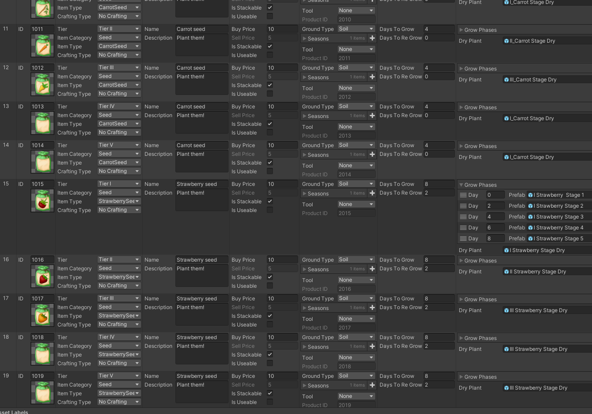
Isa:
Dieser Blogeintrag wird etwas länger, da ich unseren Weg von rund 4 Monaten zusammenfasse. In Zukunft erfolgen kürzere, 2-wöchentliche Updates, um
über den Fortschritt zu berichten.
Wir begannen mit der Planung von Magical Harvest bereits im November 2021. November und Dezember bestand aus Programmierersicht mehr aus
testen und ausprobieren, während nebenbei die Konzeptphase für die ersten Spielelemente voran ging.
Programmierung der ersten Inhalte:
Im Januar begann dann die eigentliche Programmierarbeit. Leider kann man nicht sofort mit Features beginnen, die für den Spieler direkt sichtbar
sind. Es musste erst einmal eine Datenverwaltung erstellt werden, um die ganzen Items im Spiel zu handhaben und um sie einfach ins Spiel integrieren
können. Danach erfolgte die Erstellung des Inventarsystems und des Gridsystems, da darauf die hauptsächliche Spieleraktion aufbaut.
Davor und auch dazwischen wurde das Tag-Nacht-system eingefügt, ein Kalender, die Ausdauer des Spielers - Dinge, die nebenher im Spiel laufen.
Außerdem das erste Interagieren mit Farm-kacheln, um Samen zu sähen, Pflanzen zu gießen und sie ernten zu können.
Dekorieren und Angeln:
 Im Februar habe ich mich hauptsächlich auf den Dekorationsmodus konzentriert, da dieser auf dem Spielgrid basiert und vieles von der
dahinterliegenden Logik abhängt. Nun kann man immerhin die Farm (und das Spielerhaus) dekorieren!
Im Februar habe ich mich hauptsächlich auf den Dekorationsmodus konzentriert, da dieser auf dem Spielgrid basiert und vieles von der
dahinterliegenden Logik abhängt. Nun kann man immerhin die Farm (und das Spielerhaus) dekorieren!
Vor 2 Wochen habe ich dann den bis dahin genutzten Platzhalter-charakter ersetzt. Nach 5 Tagen des Lernens wie man 3D-Figuren kreiert, erschuf
ich einen ansehlicheren Test-spielercharakter. Anschließend begann ich mit der Implementierung des Angelminispiels, was ich diese Woche fertig bekommen
werde. Jedenfalls in der Rohfassung.
Assets:
Alles was ich aktuell mache, muss natürlich noch aufgehübscht werden. Soundeffekte, weitere Animationen, UI, richtige 3D-Assets - all das fehlt.
Die aktuellen Assets sind zu 95% Platzhalter. Also die ganzen Spielobjekte und das Benutzerinterface.
Wir sind keine professionellen 3D-Artists und brauchen für diese Rolle noch jemanden, dennoch versuchen wir einige Assets selbst zu erstellen, um
eine vorläufige, grobe Richtung des Spiels zeigen zu können. Die ersten Crops erstelle ich zum Beispiel bereits und durch unser System sind das einige!
Ziemlich wenig in knapp 3 Monaten, oder?:
Ja und nein. Es sieht wenig aus, aber hinter dem bisher fertig gestellten Game-Elementen steckt noch mehr:
Homepage anfertigen, Steam-page vorbereiten, 3D-Modelling und Texturing lernen und umsetzen, das Spiel planen, Konzepte erstellen (schriftlich und art),
die Geschichte und Charaktere planen... und mehr.
 Zeiteinteilung? : Ich programmiere rund 40% meines Arbeitstages am Spiel (und ich arbeite rund 10-12h/Tag daran), rund 45 % Art, Konzept oder Sonstiges, und
rund 5% Social Media (Tendenz hier steigend).
Zeiteinteilung? : Ich programmiere rund 40% meines Arbeitstages am Spiel (und ich arbeite rund 10-12h/Tag daran), rund 45 % Art, Konzept oder Sonstiges, und
rund 5% Social Media (Tendenz hier steigend).
Wir hoffen auf eine erfolgreiche Kickstarter-Kampagne im Herbst, um zumindest Artists einstellen zu können.
Ausblick:
Diese Woche werde ich das Angelminispiel fertig programmieren, soweit es im aktuellen Spielstatus möglich ist. Dazu zählen noch ein paar 2D-Icons für die Fische und die vorläufige Angel
malen. Nebenbei ist mein Ziel, die 3D-Models für die Sommer-Feldfrüchte fertig zu erstellen.
Der nächste Blogeintrag wird bereits nächste Woche erfolgen, da der langfristige Plan ist, zum Anfang eines Monats und zur Mitte eines Monats einen Blog zu schreiben.